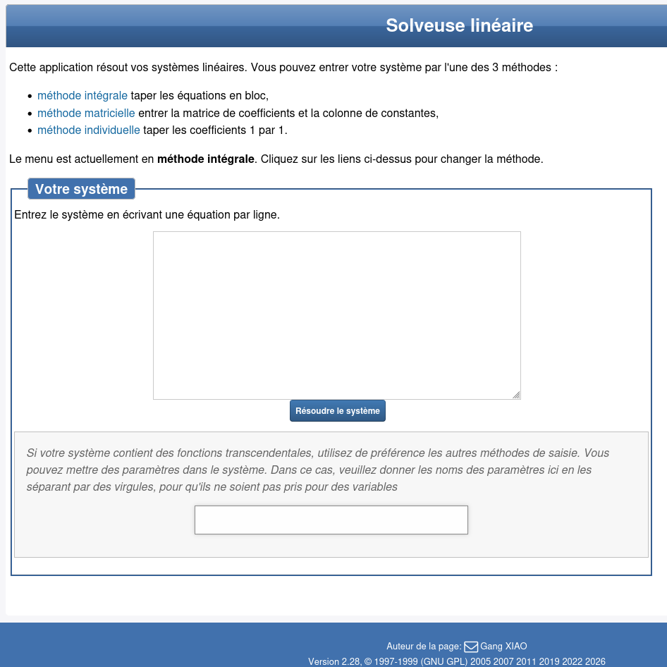
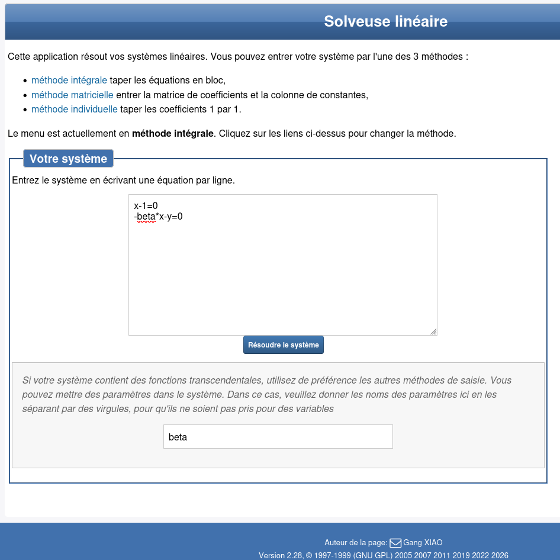
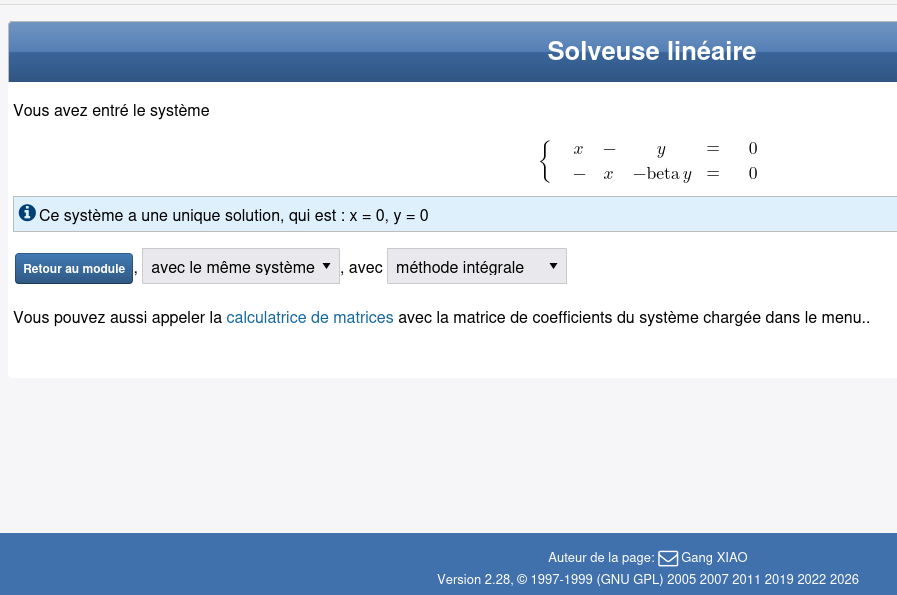

Compétence visée
Résoudre un système d’équations linéaires à l’aide d'un outil numérique.
Utiliser WIMS pour résoudre les systèmes linéaires
Le site WIMS est un outil interactif qui permet de vérifier et d'explorer des systèmes linéaires vues dans ce cours. Il est particulièrement utile pour :
- Vérifier une solution trouvée à la main
- Tester différentes méthodes de résolution
- Observer des cas particuliers (solutions, aucune solution, infinité de solutions)
- Visualiser des graphiques liés aux équations
Je te propose ci-dessous les différentes étapes pour vérifier notre solution de l'illustration de ce que nous avons appélé une "économie homogène".
- Étape 1 — Ouvrir la solveuse
- Étape 2 — Choisir la méthode intégrale
- Étape 3 — Lancer le calcul et lire le résultat
On arrive sur la page « Solveuse linéaire ».

On reste en méthode intégrale et on écrit une équation par ligne.

On clique sur Résoudre le système puis on lit la conclusion (solution unique / aucune / infinité).

Quelques conseils pour bien utiliser WIMS
- Sois attentif à la **syntaxe** : les inconnues doivent être clairement nommées (ex : Y, C, T).
- Si tu as des problèmes avec les parenthèses, vérifie que l’expression est correcte (une parenthèse fermante pour chaque ouvrante).
- Commence toujours par un petit cas simple : 2×2 avant de passer à 3×3.
- Utilise la sortie graphique quand elle est disponible : cela te permet de visualiser les solutions.